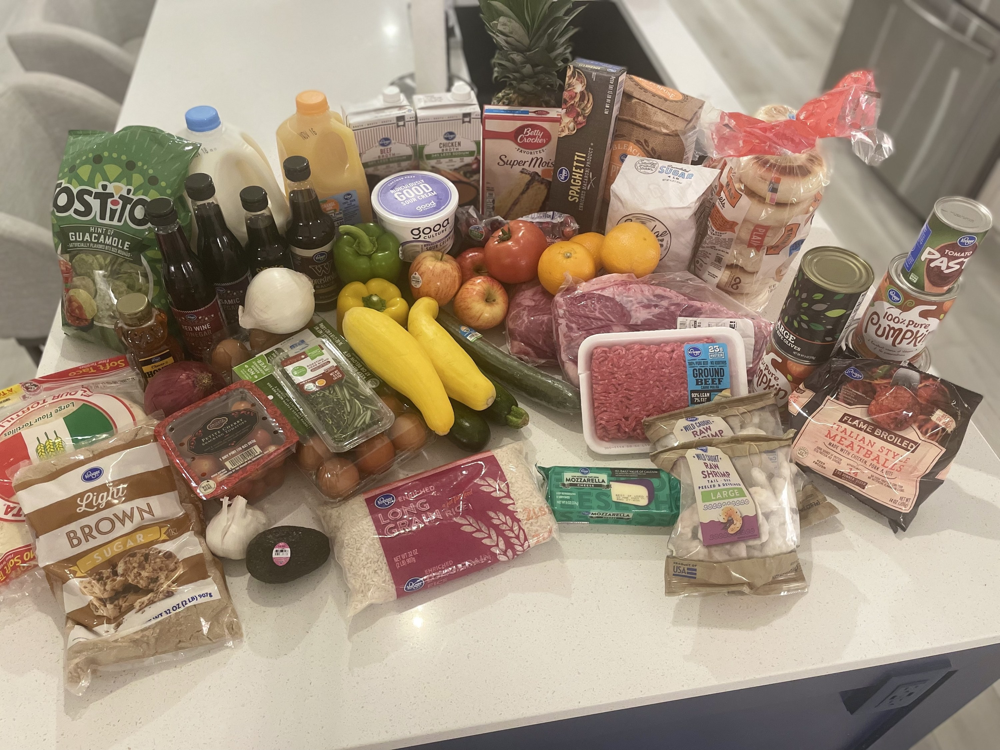

Økonomsik usikkerhet blant studenter

For mange Norske studenter er Lånekassen en viktig del av økonomien.
Men er støtten virkelig nok i dagens økonomiske klima? Vi har snakket med Yashar Hiwi,
en student bed Høgskolen i Østfold, om hans erfaring med å leve på studielån og stipend uten deltidsjob.
Yashar forteller at han har valgt å fokusere på studiene uten å jobbe ved siden av.
"lånekassen gir meg akkurat nok til å dekke husleien og noen grunnleggende utgifter, men det er ofte utfordrende å få pengene til å strekke til hele måneden," sier han.
Han legger til at prisøkningen på dagligvarer og strøm har gjort det vanskeligere å holde et balansert budsjett,
spesielt når matprisene har økt med 6% det siste året, mens Lånekassens støtte kun har økt med 2%(Forside - Kunde).
En rapport fra Norsk Studentprganisasjon viser at omtrent 47% av studentene må jobbe heltid ved siden av studiene for å dekke sine levekostnader.
https://www.ssb.no/utdanning/hoyere-utdanning/artikler/mye-jobb-forer-til-mindre-studietid--men-ikke-all-jobb-gar-pa-bekostning-av-studiene
Yashar understreker at han ofte vurderer å ta en deltidsjobb, men er bekymret for
at det vil gå utover studiene. "Hvis jeg må jobbe mer en 10 timer i uka, frykter jeg at jeg ikke vil ha nok tid til
skolearbeidet," sier han.
.png)